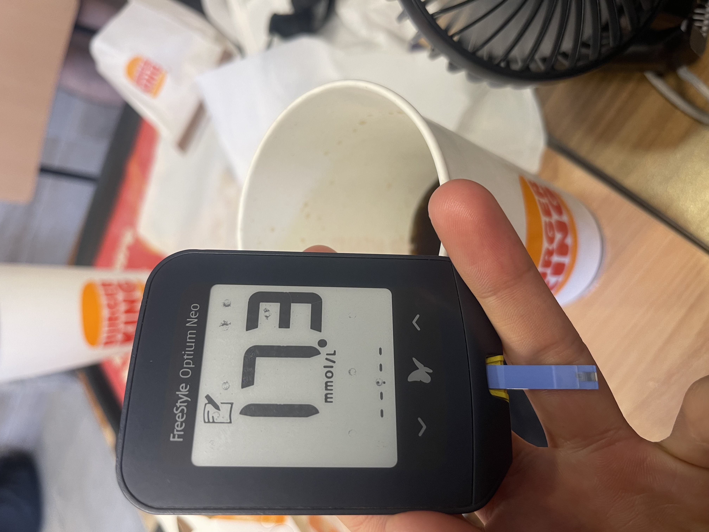

When you're first diagnosed with diabetes, there is an onslaught of facts thrown your way. As you navigate the deluge of information you receive in the proceeding days, months or heck even years (if you're an avid researcher, like me), you'll come across a few facts about diabetes. Here's five you might not know.
1. We do not know the cause of type one diabetes
Whilst our understanding grows year on year, I personally feel, as an individual with some STEM knowledge, that we will not reach a conclusion on what causes type one diabetes. Its causes are likely multifaceted, intertwined and just an overall mess to try to decipher into one coherent, clean picture.
This is because type one diabetes is an autoimmune disease and outside of our current knowledge on the immune system, we do not know much about what causes autoimmunity. Herein lies the main problem. I am studying immunology at university and the complexities of the immune system leave little to be desired in the way of further whole-body interactions. From the way you brush your teeth, to the way you chew your food, your immune system is probably involved.
The thing is, the immune system is the most advanced and powerful army in design to ever exist. It is ironically the reason I'm writing this blog and you're reading it; it's the reason life exists after so many billions of years of competition between species. The immune system has a soldier specifically trained to kill any pathogen or to deal with any molecule that will ever exist. That is a whole lot of soldiers and imagine the admin in managing this army.
Well, that's where the immune system of type ones slips up. You see, our immune system has to enrol a soldier that can detect any molecule or pattern on a virus or bacteria that could ever possibly exist, and in this process, it enrols some soldiers that see some of our own cells as targets. This is just by design.
However, the complexity of the immune system deals with this through several mechanisms, it detects these self-targeting soldiers as soon as they're born and deactivates them or destroys them via a suicide signal. If this fails, it has special soldiers (commanders if you like that analogy) that patrol your body and hunt these rogue immune soldiers down to deactivate them in the periphery (outside of where immune cells are made, in the bone, and then trained, in the thymus). Both are major mechanisms that rarely should go wrong. There are then further mechanisms that prevent autoimmunity should these two fail, but ultimately in all cases of autoimmune diseases, all these extremely hardcoded and foolproof safety protocols of our immune systems fail. Why that is, we just do not know. Diet, lifestyle, infection, disease, medications all likely have a role to play but the extent in which each plays, we further do not know.
2. Diet is related to diabetes
Whilst not always directly related to its development if you're perhaps a type one or LADA or MODY diabetic, diet does play a role in your diabetes. This is related to management.
Diet is the biggest player in tightly controlling sugar levels in diabetes. It is how I have achieved a non-diabetic HbA1c of 5.1% for a sustained period. It is the reason I have yet to experience complications of diabetes.
Whether we like to acknowledge it or not, diet and diabetes are as interwoven as night and day. Diet is important in every facet of diabetes management and only in making necessary adjustments and decisions regarding diet and nutrition, can diabetics truly achieve better balance and control.
3. High sugars are dangerous
One thing that isn't really acknowledged enough by modern healthcare is the severity of high sugars in diabetes and its impact on future health and wellness.
High blood sugars, that is anything above 7.8mmol/L is rather quickly going to adversely affect systems in the body. Some data suggests that sugars above even 6mmol/L can be deleterious for health. This is due to several underlying mechanisms which are governed by glucose levels in the body.
The main mechanism is glycation. This is the act of 'sticking' glucose to another molecule. When you toast your bread and it goes yellow? Yeah, that's glycation happening in front of your eyes, and the same thing happens internally. Glucose sticks to things it shouldn't. In diabetes, this is accelerated due to higher sugars.
This is why retinopathy, neuropathy, nephropathy all exist in the diabetes zone of complications. Glucose is a dangerous molecule to have knocking around for too long, and even more dangerous to have in excess. Glycation is the reason we use HbA1c, which represents glycated haemoglobin, that is your red blood cells with glucose stuck to them. It allows us to gain an insight of how much sugar is sticking to your blood cells so we can estimate your overall average sugar level.
Glycation leads to further issues as it can change the shape of molecules too, and this damages them further leading to the formation of advanced glycated end products, or AGEs. These molecules are damaged beyond repair and have been linked extensively to cardiovascular disease, stroke, and other health issues.
The truth is high sugars are never a good thing. I try to avoid them like the plague. The body is simply not designed for high sugars, which is why in natural environments, humans rarely have sugars above 5.2mmol/L. In diabetes, numbers can be as much as 6x as high as this in some cases. It's truly a dangerous area to reside in if you're diabetic.
4. Ketones aren't always bad
This is perhaps the most misunderstood fact by both diabetics and their doctors who tend to crawl into themselves when fronted by a diabetic on a ketogenic or low-carb diet. Ketones are not toxic. Ketones alongside high blood sugars and lack of insulin are, in around 97 out of 100 cases.
The key to understanding ketones is to understand the biology behind them. Ketones are an effective source of fuel for the body, they actually are more energy efficient than glucose and produce more energy per molecule used up in a cellular reaction we call the citric acid cycle, a cycle which produces ATP, an energy source for every mechanism and every cell in your body. This cycle can use ketones in the absence of sufficient glucose to produce ATP, and it does it pretty damn well.
Glucose is always needed by some cells in the body which lack the necessary cellular 'equipment' to use ketones as an energy source. These cells include red blood cells, liver cells, retinal cells, medulla cells in the kidneys and a few cell types in the brain (though not all brain cells). In the absence of carbohydrates in our diet, the liver and kidneys become glucose-producing factories, turning out enough glucose for these cells which cannot use glucose. Each kidney can produce about 30g of glucose a day, whilst the liver puts them to shame, producing up to 200g of glucose a day. Where does this glucose come from, you ask? It comes from fat and protein we eat, and when we are not eating any, it comes from fat stores and then finally, in starvation, protein which makes up the muscles. Anyone who says 'carbohydrates are needed for energy' is fundamentally and scientifically wrong - and it's insulting to our body's machinery which easily makes a mockery of such a statement.
So where do ketones come in? Whilst the body can produce glucose for cells with absolute requirement for it, it isn't the most energy-efficient energy source we have. Creating glucose from protein and fats uses up about 33% of its total energy just to create it. So the body cleverly adapted itself over billions of years of evolution to use fatty acids and ketones. Fatty acids are easily mobilised in the body and sent to places for energy, and ketones are produced in the liver and then sent out in the blood to places like the brain which requires it. The brain is an incredibly energy-hungry organ, and it is heavily protected by a blood-brain barrier. Entry across such a barrier is tightly controlled, and ketones can cross this barrier no problem. Ketones therefore replace glucose in organs such as the brain or muscles; the reason fatty acids aren't the best energy source, is because each cell takes a while to make use of the energy in these fatty acids, and this is done through fatty acid oxidation, a complex process that takes a while to 'turn over' if you will. Once the pistons fire up, it's incredibly energy efficient, but it can take a while and the brain and muscles can require energy in a more immediate form, and ketones provide this.
Where does the idea of ketones being bad come from? Ketones are a clever metabolic evolution which has been directly responsible for our survival. Sadly, diabetic ketoacidosis has led to many deaths from diabetes, and this continues to this day. However, this is not due to ketones; it is due to lack of insulin. In cases of diabetic ketoacidosis, the body actually has glucose present, but it cannot use it due to having no insulin. Insulin is needed to 'access' glucose, and without this, your body is fooled into believing you are eating low-carb, beginning the ketone production cycle alongside the glucose-producing mechanisms in the kidneys and liver. This continues indefinitely in the absence of insulin to regulate the process. The ketones are then produced in excess, and whilst the kidneys are overwhelmed by glucose in the blood, they cannot be expelled from the body, to the extent that they're even pushed out of the blood into the lungs and exhaled out of us, causing bad breath. This is the point where ketones build up in the blood, and this turns the blood acidic, which can then, without prompt intervention, very suddenly lead to death. The cause? It's not ketones, it's having no insulin. Ketones are dangerous at diagnosis as there is no insulin to regulate the production of ketones for energy, resulting in too many ketones. When insulin is present, ketone production is regulated by the liver tightly. Think of insulin as a switch on a plug socket. If you plug ketone production into a socket with no switch, it is always powered. If you plug it into a socket with a switch (insulin), you can turn it off and on.
At diagnosis, we're not taught about what we're facing, only that ketones are causing it (which is unfortunately misinformation). Doctors then warn patients that ketones are dangerous. They are not, if you're appropriately taking insulin alongside any low-carb or keto diet. The chances of you entering diabetic ketoacidosis in these cases is less, as glucose is able to be used by the insulin you are taking, preventing the body from entering a downward spiral of glucose production and dysregulation. Now you know not to blame ketones, but to blame the absence of insulin.
5. Diabetes is controllable
This is very true. Diabetics often get lost in the myriad of factors that impact their blood sugars, leading to abandonment of any sense that diabetes can be and should be controlled. Diabetes rests on key pillars, lifestyle, medication and balance. Balance is the key. I enjoy ice cream, popcorn and other sugary snacks every once in a while, but I also understand that I live with a disease that results in complete imbalance of my blood sugars, so I responsibly limit my consumptions of such high-risk foods. However, that is balance, not deprivation, which some doctors and healthcare teams are quick to call out.
Guess my favourite going out meal?
In doing this, I have achieved a HbA1c of 5.1%, a competitively non-diabetic HbA1c. Diabetes doesn't have to be a losing game, and it is possible to take control of your sugars. I can definitely help you with this, through education and improving understanding of how diabetes works. This has been 5 facts about diabetes, but there are many more you may not know; book a free coaching consultation with me to find out.